Keypoint Curve command bar
- Main Steps
- Select Points step
-
Defines the points used to create the path.
- End Conditions step
-
Specifies the end conditions for the path.
- Curve Length step
-
Specifies the end conditions for the path.
- Preview/Finish/Cancel
-
This button changes function as you move through the feature construction process. The Preview button shows what the constructed feature will look like, based on the input provided in the other steps. The Finish button constructs the feature. After previewing or finishing the feature, you can edit it by re-selecting the appropriate step on the command bar. The Cancel button discards all input and exits the command.
- Redefine Point
-
Redefines the location of an existing point you select. You can use the Relative/Absolute option on the command bar to redefine its position relative to its current position or with respect to its absolute position in the document. You can type a new coordinate in the X, Y, or Z boxes, select a keypoint, or click a point in space.
- Locate Filter
-
Sets the type of keypoint on existing geometry you can select to define the path.
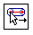
Locates cylindrical faces for path for path to pass through.
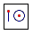
Locates the center or end point.
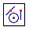
Locates any keypoint.
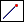
Locates an end point.
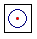
Locates the center point of a circle or arc.
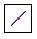
Locates a midpoint.
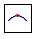
Locates a silhouette point.
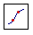
Locates an edit point.
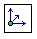
Locates an x,y,z point in free space.
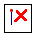
Turns off keypoint location.
- Flip
-
Reverses the path direction between cylinder ends.
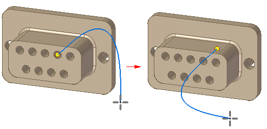
You can flip the path direction while creating or editing the path.
- Relative/Absolute Position
-
Specifies whether the value you type is relative to the point's current position or is based on the global origin of the document. The global origin is the point where the three default reference planes intersect (the exact center of the design space).
- X
-
Sets the position for the x axis.
- Y
-
Sets the position for the y axis.
- Z
-
Sets the position for the z axis.
- Deselect (x)
-
Clears the selection.
- Accept (check mark)
-
Accepts the selection.
- End Conditions options
-
- Show/HIde Tangency Control Handles
-
Specifies the end condition for the start end of the curve. You can specify whether or not the start point of the curve is tangent to an element you select, and the length of the tangent vector. You can define the length of the tangent vector by dragging the tangent vector handle using the mouse or you can type a value.
- Start
-
Specifies the end condition for the start end of the curve. You can specify whether or not the start point of the curve is tangent to an element you select, and the length of the tangent vector. You can define the length of the tangent vector by dragging the tangent vector handle using the mouse or you can type a value.
- End
-
Specifies the end condition for the finish end of the curve. You can specify whether or not the start point of the curve is tangent to an element you select, and the length of the tangent vector. You can define the length of the tangent vector by dragging the tangent vector handle using the mouse or you can type a value.
- Curve Length step options
-
- Fixed Length
-
Specifies whether of not the path is a fixed length or not. If you select this option, the Length value field becomes active and you can enter a fixed length for the curve.
- Constraint Direction
-
Specifies the constraint direction in which the control points move when you increase or decrease the curve length.
- Length
-
Specifies the length for a fixed length curve.
- Other command bar options
- Name
-
Displays the feature name. Feature names are assigned automatically. You can edit the name by typing a new name in the box on the command bar or by selecting the feature and using the Rename command on the shortcut menu.